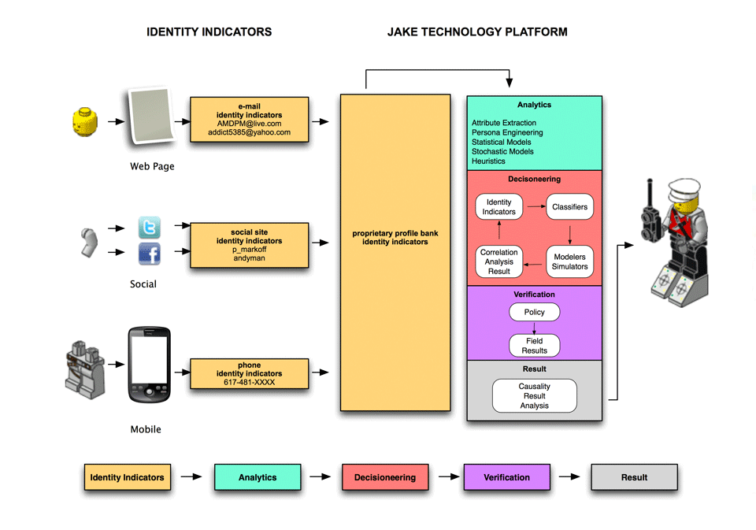
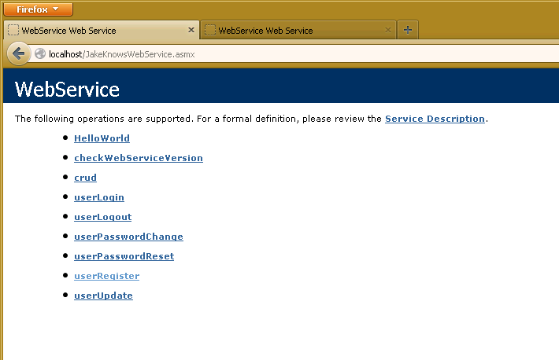

JakeKnows Projects
Web App and Engine: System Service that provides data to the Web App, a Web Bot collects information about users on the web, from various sites and calculates how trustworthy the user identity is based on the data found. Android and iPhone apps were developed by another team, and these apps interfaced with the backend. The backend was always ready with the data to be served, via caching and other mechanisms, so that a web call would be orders of magnitude faster as opposed to the usual web apps that get the data as needed, for each call.
Sony App: Provide Job Applicants with Access to Sony Jobs Database and Apply for Jobs. This application was developed very fast in a matter of 3 or 4 weeks to deployment, sold to Sony. The application used the code generators and the code base from the app above so code reuse was at a maximum.
Work Performed
Web Applications Development. Assimilated legacy server application in order to develop new architecture and design. Developed back end server for job application system for mobile devices for iPhone and Android.
Developed architecture, design and code for the new Identity Engine. The engine is a business core application intended to provide positive identification of an individual via digital activity harvested in diverse ways using patented technologies.
From the project archive
The original project archive holds 7 source files (C#), 5 design documents and 2 notes. They are not published here because they belong to JakeKnows; I’m happy to walk through the design and code in an interview.
Screenshots


Interested in working together?